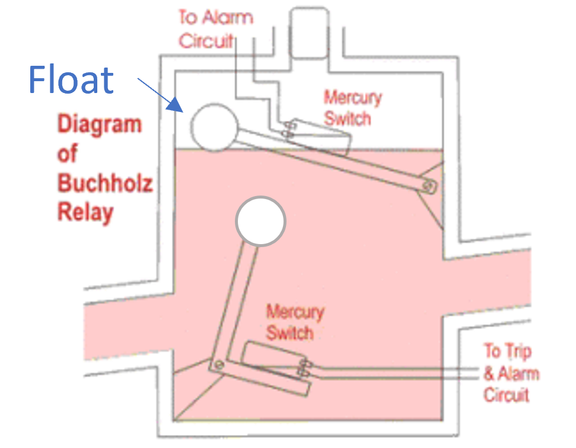
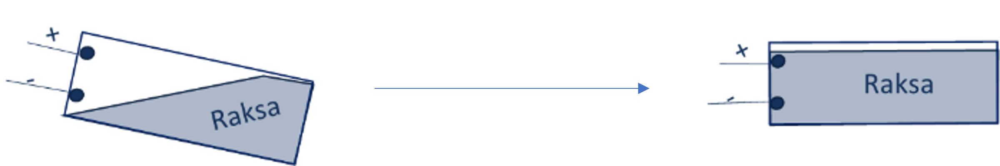

Prinsip Kerja

- Relay buchholz terdiri dari komponen utama berupa air raksa, float/pelampung, saklar alarm, saklar trip,
dan jendela inspeksi
- Level minyak di dalam trafo dapat berubah misalnya karena kebocoran minyak, kebocoran udara, atau pemanasan sehingga
minyak menguap
- Saat level minyak berkurang, pelampung atau float yang menahan posisi saklar alarm dan saklar trip akan ikut turun,
sehingga posisi saklar berubah
- Saklar memiliki kabel + dan - yang tidak saling terhubung serta air raksa
- Dalam kondisi normal, saklar miring sehingga air raksa tidak menyambungkan kabel + dan -. Saat terjadi perubahan
posisi saklar akibat pelampung turun, maka saklar akan berada dalam posisi mendatar, sehingga air raksa akan menghubungkan
kabel + dan -
- Karena kabel + dan - terhubung maka saklar ON sehingga terjadi alarm dan trip

Perhatikan gambar ilustrasi saklar. Dalam posisi awal, air raksa tidak menyentuh kabel - dan +. Seiring perubahan posisi saklar,
air raksa akan mengikuti sehingga kabel terhubung